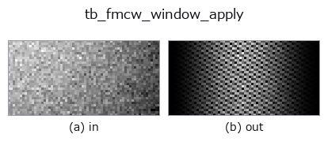

typed op• Data kinds: beatcube → beatcube
• Call: fullseye.apply(img, "tb_fmcw_window_apply", a=0.5, b=0.5) (2-D model = एक image + दो scalar knobs a,b∈[0,1])

*Figure synthetic 128×128 input पर सच में चलाकर मिला output है। बाईं ओर input, दाईं ओर output। Point clouds ऊपर से देखे गए scatter के रूप में (brightness = z), 1-D series line के रूप में, volumes z दिशा में maximum-intensity projection के रूप में, videos बीच के frame के रूप में, complex images amplitude के रूप में, और जो return values चित्र नहीं बन सकते वे स्वयं values के रूप में दिखाए जाते हैं।*
*Knob a output नहीं बदलता (मापा गया: 0.1 / 0.5 / 0.9 पर एक जैसा)।*
*Knob b output नहीं बदलता (मापा गया: 0.1 / 0.5 / 0.9 पर एक जैसा)।*
Stages (पहले आने वाले ops → यह op, बाएँ से क्रम में):
▸ tb_fmcw_window_apply: stages का figure (docs site)
दूसरी images पर भी (synthetic scene / photo / coins। ऊपर की row में inputs, नीचे की row में उनके outputs। Knobs default पर):
▸ tb_fmcw_window_apply: दूसरी images पर output (docs site)
beat cube के range और/या Doppler axis पर periodic window लागू करता है।
> नीचे का विस्तृत विवरण मूल text में है — सारांश और headings का अनुवाद हो चुका है।
The sidelobes of a rectangular (unwindowed) transform are -13.3 dB, so a strong target buries a weak one 20 dB down at a completely different range. Windowing trades main-lobe width for sidelobe level; the published figures (Harris 1978, Table 1) and the levels measured in this repository on a single bin-centred target are:
========== ============== ============== ==================
window published PSL measured PSL measured -3 dB lobe
========== ============== ============== ==================
rect -13.3 dB -13.25 dB 0.885 bin
hann -31.5 dB -31.47 dB 1.438 bin
hamming -42.7 dB -42.45 dB 1.301 bin
blackman -58.1 dB -58.11 dB 1.641 bin
========== ============== ============== ==================
Measured by transforming each window on its own with 2^18-point zero padding and taking the highest lobe past the first null — that *is* the definition of peak sidelobe level, so these are the module's own numbers, not copied ones. Hamming lands 0.25 dB off the published figure because the published one is for the optimal 0.53836/0.46164 pair; the 0.54/0.46 coefficients written here are the textbook ones and this is what they actually give.
What it buys, measured end to end: a target 45 dB below a strong one, seven range bins away, is undetectable unwindowed (its cell sits 24.6 dB down in the leakage skirt and is not even a local maximum) and becomes a clean local maximum at -43.6 dB with hann. That comparison is step 4 of examples/fmcw_range_doppler.py.
*axis* is named by role — "range" (fast time, the last axis), "doppler" (slow time, the middle axis) or "both" — never by number, because a transposed cube is the mistake this naming is defending against.
The window is *not* folded into range_doppler_map: keeping it a separate op is what lets the sidelobe table above be measured as a difference, and keeps the transform op a pure 2-D FFT.
Returns a new complex cube of the same shape. Raises ValueError on a real-valued or malformed cube, or an unknown *window* / *axis*.
Typed bridge of the rangedoppler op fmcw_window_apply into the 2-D evolution registry: the same implementation, called under the op(v, a, b) convention. This op has no tunable parameter; a and b are unused.
• Sample data catalog (DL URL / license) — 2-D के लिए skimage.data (BSD/public) + synthetic, 3-D के लिए real data sources (Stanford/PDS आदि) के DL URL।
• Operators का स्रोत और संदर्भ — इस op family के मूल research/methods के स्रोत।
नीचे का program सच में चलता है, यह जाँचा गया है (figure वाला ही input)। Studio की help में यह block buttons बन जाता है, जिनसे इसे वहीं load करके चलाया जा सकता है।
img_to_beatcube 0.50 0.50 tb_fmcw_window_apply 0.50 0.50
▸ यह pipeline load करें · Load करके चलाएँ
नीचे के उदाहरण मूल ledger op fmcw_window_apply को call करते हैं। यह bridge op वही implementation है, बस fn(v, a, b) convention के अनुसार ढाला गया है, इसलिए व्यवहार वैसा ही लागू होता है (केवल call का रूप अलग है)।
• fmcw_range_doppler — py -3.11 examples/fmcw_range_doppler.py
beatcube को input के रूप में लेते हैं)identity · tb_range_doppler_map · tb_fmcw_range_profile · tb_beamform_delay_sum
typed)tb_points_to_voxel · tb_estimate_point_normals · tb_iss_keypoints · tb_project_points · tb_render_point_depth · tb_statistical_outlier_removal · tb_radius_outlier_removal · tb_voxel_grid_downsample
*Provenance: ops.py — 2D operator registry. यह per-op note tools/opdocs.py md से अपने-आप generate होता है (हाथ से edit न करें)।*
© 2026 Kazufumi Furuse — Fullseye operator documentation. Licensed under Apache-2.0.